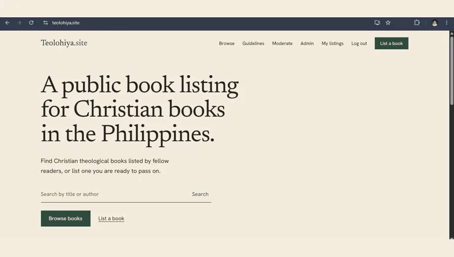

Building my way into the cloud.
I'm Jervil Angelo De Leon, an HRIS Technical Support professional who learns AWS by building on it: hands-on cloud and infrastructure projects, documented here with my certifications and growth.
- 5
- Projects built
- 20
- AWS services used
- 13
- Certifications


AWS services used in my projects include Lambda, S3, DynamoDB, EC2, API Gateway, Cognito, Amplify, CloudWatch, IAM, VPC and SNS.

Teolohiya.site
My flagship build and a live AWS application: a moderated listing board for Christian theological books in the Philippines, on Next.js and AWS Amplify Gen 2.
 Amplify
Amplify Cognito
Cognito AppSync
AppSync DynamoDB
DynamoDB Lambda
Lambda S3
S3
Keep exploring
- ProjectsA serverless ticketing API, a hardened EC2 server, HRIS automation and more
- CertificationsAWS, Oracle Cloud, Google, Cisco and Certiport, with verification links
- JourneyFrom animation and game development to support desk to cloud
- ServicesFreelance websites, branding and motion work for businesses and organisations
- ContactOpen to junior cloud, infrastructure and systems roles